Code
library(dplyr)
library(tidyr)
library(httr2)
library(lubridate)
library(tidyverse)
library(patchwork) # For combining plots
library("knitr")Retirement planning is a critical aspect of financial security, and selecting the most suitable retirement plan can significantly impact the financial well-being of employees post-retirement. This project explores the decision-making process between two popular retirement plans offered at CUNY (City University of New York): the Teachers’ Retirement System (TRS) and the Optional Retirement Program (ORP). By leveraging historical economic data, advanced statistical techniques, and Monte Carlo simulations, this project aims to provide an analytical framework to assess the financial outcomes of these plans under varying economic conditions.
Calculate the retirement contributions and simulate investment growth. This project compares retirement benefits and develop a framework by combining historical data and probabilistic modeling. Also, understand the retirement planning. Ultimately, the objective is to empower employees to make informed decisions by presenting a clear and data-driven comparison of the plans, considering both financial stability and market uncertainty.
The comparison between the Teachers’ Retirement System (TRS) and the Optional Retirement Program (ORP) shows clear differences. TRS offers steady, guaranteed income for life, adjusted for inflation, making it a great choice for people who want security and predictability in retirement. On the other hand, ORP has the potential for higher payouts because it invests in the market, but it also carries more risk, including a 75% chance of running out of money if withdrawals aren’t carefully managed. ORP provides a higher average monthly income ($344.25 compared to $271.13 for TRS) but depends heavily on market performance and good financial planning.
In simple terms, TRS is the safer option for those who want steady income with no surprises, while ORP works better for people willing to take risks for potentially greater rewards. To make ORP work long-term, retirees might need to lower withdrawal rates or adjust their investments. The choice between the two plans depends on whether someone values guaranteed income or is comfortable with market risks for a chance at higher returns. This analysis gives CUNY employees the tools to choose the plan that fits their needs and goals.
The following section outlines the analysis and visualization steps taken to evaluate and compare the TRS and ORP retirement plans. This report walks you through the libraries used, methodologies, simulations, and visual insights used to determine the best plan based on individual financial goals and risk tolerance. Let’s dive into the details of the analysis
Firstly, to streamline the analysis and ensure efficient data handling, I used a variety of R libraries throughout the project. Below is a breakdown of the libraries I loaded and their specific purposes:
library(dplyr)
library(tidyr)
library(httr2)
library(lubridate)
library(tidyverse)
library(patchwork) # For combining plots
library("knitr")In this section, this simulation demonstrates the future value calculation of a retirement savings plan over a period of 24 months. The model assumes a fixed monthly contribution of $100 and variable monthly returns, simulated as random normal values with a mean of 0.5% per month. The code applies a compound return formula to calculate the growth of contributions over time.
RETIREMENT <- data.frame(
r = rnorm(24, mean = 0.5) / 100, # Monthly returns
C = rep(100, 24), # Monthly savings: 100 per month
period = 1:24 # Period ID (# of months)
)
RETIREMENT |>
mutate(net_total_return = order_by(
desc(period),
cumprod(1 + lead(r, default = 0))
)) |>
summarize(future_value = sum(C * net_total_return)) |>
DT::datatable()The conclusion of the simulation reveals that the future value of the retirement savings over the 24-month period. This result takes into account the monthly contributions of $100 and the compounding effects of random monthly returns (simulated with a mean of 0.5%). This value represents the total amount accumulated in the retirement account after 24 months under the given assumptions.
Create your AlphaVantage free API key at https://www.alphavantage.co/support/#api-key.
Do Not Include This Key in Your Submission.6 It is your personal account and linked to whatever email you use to create your account.
I recommend creating a new file on your computer and storing your key there. You can read it into R using the readLines function and use it as needed. Just make sure not to print it.
Once you store your AlphaVantage key in a plain text file, make sure to add that file to your .gitignore to make sure you don’t accidentally include it in your git history.
Documentation for the AlphaVantage API can be found at (https://www.alphavantage.co/documentation/)
This section involves obtaining and securely loading the AlphaVantage API key, which is used for accessing financial and economic data. This key enables access to financial datasets necessary for the project.
ALPHA_ADVANTAGE_API_KEY <- readLines("alphavantage_key.txt")
ALPHA_URL <- "https://www.alphavantage.co/query"Create your FRED free API key at https://fredaccount.stlouisfed.org/login/secure/.
Do Not Include This Key in Your Submission. It is your personal account and linked to whatever email you use to create your account.
I recommend creating a new file on your computer and storing your key there. You can read it into R using the readLines function and use it as needed. Just make sure not to print it.
Once you store your FRED key in a plain text file, make sure to add that file to your .gitignore to make sure you don’t accidentally include it in your git history.
Documentation for the FRED API is available at https://fred.stlouisfed.org/docs/api/fred/.
This section involves obtaining and securely loading the FRED API key for accessing Federal Reserve Economic Data (FRED). The FRED API key allows us to query macroeconomic data, such as inflation rates and CPI, which are essential for the retirement plan analysis.
FRED_API_KEY <- readLines("fred_key.txt")
FRED_URL <- "https://api.stlouisfed.org/fred/series/observations"In this section, I used three approaches are used to estimate the variance of the sample median.This analysis estimates the variance of the sample median using three methods: bootstrap resampling, asymptotic theory, and a simulation-based approach.
set.seed(100)
DATA <- rchisq(250, df = pi, ncp = exp(2))
SAMPLE_MEDIAN <- median(DATA)
TRUE_MEDIAN <- median(rchisq(5e7, df = pi, ncp = exp(2)))
B <- 500 # Number of boostrap samples to create
n <- length(DATA) # Original data size
variance <-expand_grid(
B = 1:B,
n = 1:n
) |>
# Notice here we sample _with replacement_ from DATA
mutate(x = sample(DATA, n(), replace = TRUE)) |>
group_by(B) |>
summarize(f_boot = median(x)) |>
summarize(var_f = var(f_boot)) |>
pull(var_f)
cat("The variance estimated is ", variance)The variance estimated is 0.1911888# calculate the asymptotic variance of the sample median
asymptotic_variance <-1 / (4 * n * dchisq(TRUE_MEDIAN, df = pi, ncp = exp(2))^2)
cat("The asymptotic variance estimated is ", asymptotic_variance)The asymptotic variance estimated is 0.2121155# estimate the variance of the sample median
variance_sample_medianvar <- (replicate(10000, {
median(rchisq(250, df = pi, ncp = exp(2)))
}))The bootstrap variance estimate is 0.1912, and the asymptotic variance is 0.2121, showing close agreement. Additionally, a simulation approach using 10,000 replications was implemented to estimate the sample median variance. While its results aren’t shown numerically, it complements the other methods by reinforcing the robustness of variance estimates. This demonstrates the reliability of combining empirical, theoretical, and simulation-based approaches for variance estimation
This section of the analysis focuses on using bootstrapping techniques to explore the variability of the Kendall correlation coefficient between two complex variables.
x <- rchisq(100, df = 3, ncp = 2)
y <- x * sin(2 * x) + 15 * log(x)
plot(x, y)
corelation_CY = cor(x, y, method = "kendall")
cat("corelation of X and Y is", corelation_CY )corelation of X and Y is 0.7927273stopifnot(length(x) == length(y))
n_samp <- length(x)
n_boot <- 400
kendal_corelation <- data.frame(x = x, y = y) |>
slice_sample(
n = n_samp * n_boot,
replace = TRUE
) |>
mutate(resample_id = rep(1:n_boot, times = n_samp)) |>
group_by(resample_id) |>
summarize(kendall_cor = cor(x, y, method = "kendall")) |>
summarize(var(kendall_cor)) |>
pull()
cat("kendall Corelation is", kendal_corelation)kendall Corelation is 0.001807341var_result <- var(replicate(5000, {
x <- rchisq(100, df = 3, ncp = 2)
y <- x * sin(2 * x) + 15 * log(x)
cor(x, y, method = "kendall")
}))
cat("Variance with 5000 replicates is", var_result)Variance with 5000 replicates is 0.001408479The analysis confirms a strong positive relationship between the two variables. Variance estimates from bootstrapping and simulations provide insights into the stability and reliability of the correlation measure. This approach effectively combines statistical methods to analyze complex data relationships and assess the robustness of the findings.
Identify and download historical data series for each of the above inputs to your Monte Carlo analysis. If necessary, “downsample” each series to a monthly frequency and join them together in a data.frame.You must use at least one data series from AlphaVantage and one from FRED. You must use the APIs of each service to access this data and, as noted above, you need to use the “raw” API, relying only on the httr2 package (or similar) and not wrapper packages like quantmod or alphavantager.”}
This analysis utilizes data from the Federal Reserve Economic Data (FRED) API to analyze wage growth trends over time. The dataset focuses on average hourly earnings of employees in the private sector, with the raw data processed to calculate monthly wage growth rates.
response <- request(FRED_URL) |>
req_url_query(
series_id = "CES0500000003", # Average Hourly Earnings of All Employees: Total Private
api_key = FRED_API_KEY,
file_type = "json"
) |>
req_perform()
# Parse JSON response
wage_data <- response |>
resp_body_json() %>%
.$observations
wage_growth_df <- wage_data |>
map_dfr(as_tibble) |>
mutate(
date = as.Date(date),
wage = as.numeric(value)
) |>
arrange(date) |>
mutate(
# Calculate percentage change in wages
wage_growth = (wage / lag(wage) - 1)
) |>
select(date, wage_growth)
# Convert to monthly data
wage_growth_monthly <- wage_growth_df |>
mutate(
year = year(date),
month = month(date)
) |>
group_by(year, month) |>
summarise(
date = floor_date(first(date), unit = "month"),
wage_growth = median(wage_growth, na.rm = TRUE), # Median for robust aggregation
.groups = "drop"
) |>
ungroup() |>
arrange(date)
wage_growth_monthly <- wage_growth_monthly |>
mutate(
wage_growth = pmin(pmax(wage_growth, -0.1), 0.1) # Cap between -10% and 10%
)
wage_growth_df <- wage_growth_monthly |> select(date, wage_growth)
wage_growth_df |> DT::datatable()This clean and structured table allows for a comprehensive understanding of wage growth trends, supporting further economic analysis or decision-making.
Let’s visualize to make sure the wage growth seems appropriate.
# Step 1: Set initial salary
starting_salary <- 50000 # Example starting salary in dollars
# Step 2: Remove missing values from wage growth data
wage_growth_clean <- wage_growth_df |>
filter(!is.na(wage_growth)) # Remove rows with NA values
# Step 3: Initialize salary vector
n_months <- nrow(wage_growth_clean)
salary <- numeric(n_months)
salary[1] <- starting_salary # Set initial salary
# Step 4: Calculate salary growth iteratively
for (i in 2:n_months) {
salary[i] <- salary[i - 1] * (1 + wage_growth_clean$wage_growth[i])
}
# Step 5: Combine results into a data frame
salary_data <- data.frame(
Date = wage_growth_clean$date,
Salary = salary
)
# Step 6: Plot the salary growth
library(ggplot2)
ggplot(salary_data, aes(x = Date, y = Salary)) +
geom_line(color = "blue") +
labs(
title = "Simulated Salary Growth Over Time",
x = "Date",
y = "Salary ($)"
) +
theme_minimal()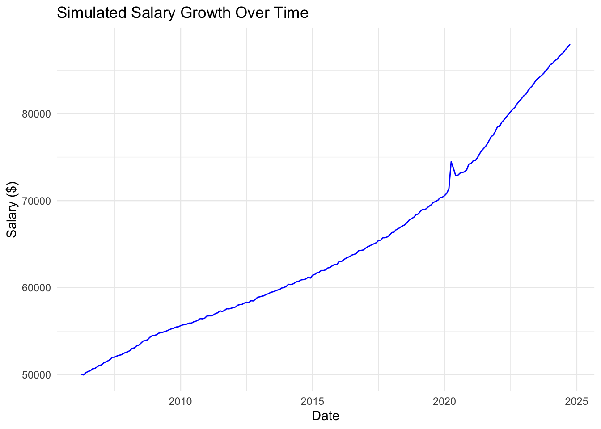
The graph shows how a starting salary of $50,000 grows over time based on historical wage. The salary increases while fluctuations around 2020 likely indicate economic disruptions like the COVID-19 pandemic. The compounding effect is evident, with the salary surpassing $80,000 by 2025, highlighting the impact of consistent wage growth on long-term earnings.
Inflation data is a key economic indicator that reflects the rate at which the general level of prices for goods and services is rising. This analysis uses the Consumer Price Index (CPI) as a measure of inflation. The data is retrieved from the Federal Reserve Economic Data (FRED) API.
response <- request(FRED_URL) |>
req_url_query(
series_id = "CPIAUCSL", # Consumer Price Index for All Urban Consumers: All Items
api_key = FRED_API_KEY,
file_type = "json"
) |>
req_perform()
# Parse JSON response
inflation_data <- response |>
resp_body_json() %>%
.$observations
# Convert to a data frame
inflation_df <- inflation_data |>
map_dfr(as_tibble) |>
mutate(
date = as.Date(date),
value = as.numeric(value) # Convert CPI data to numeric
) |>
select(date, cpi = value)
inflation_df |> DT::datatable()Calculate Inflation Rate Inflation is typically calculated as the percentage change in CPI over a time period. Here’s how to calculate the month-over-month (MoM) and year-over-year (YoY) inflation rates:
inflation_df <- inflation_df |>
arrange(date) |>
mutate(
mom_inflation = (cpi / lag(cpi) - 1) * 100, # Month-over-Month Inflation
yoy_inflation = (cpi / lag(cpi, 12) - 1) * 100 # Year-over-Year Inflation
)
inflation_df <- inflation_df |>
rename(
inflation_cpi = cpi, # CPI column
mom_inflation_rate = mom_inflation, # Month-over-month inflation
yoy_inflation_rate = yoy_inflation # Year-over-year inflation
)
# Let's visualize
ggplot(inflation_df, aes(x = date, y = mom_inflation_rate)) +
geom_line(color = "blue") +
labs(title = "Adjusted Month-over-Month Inflation Rate", x = "Date", y = "MoM Inflation Rate (%)") +
theme_minimal()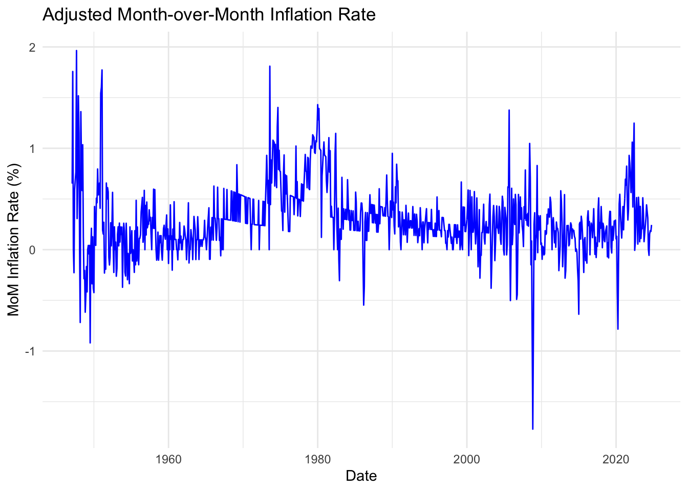
The visualization of the adjusted Month-over-Month (MoM) inflation rate reveals the historical fluctuations in inflation from the mid-20th century to the present. Significant spikes and dips highlight periods of economic volatility, such as recessions, energy crises, and financial instabilities. Over time, the variability in MoM inflation appears to stabilize during certain periods, though recent data suggests renewed fluctuations.
ggplot(inflation_df, aes(x = date, y = yoy_inflation_rate)) +
geom_line(color = "red") +
labs(title = "Adjusted Year-over-Year Inflation Rate", x = "Date", y = "YoY Inflation Rate (%)") +
theme_minimal()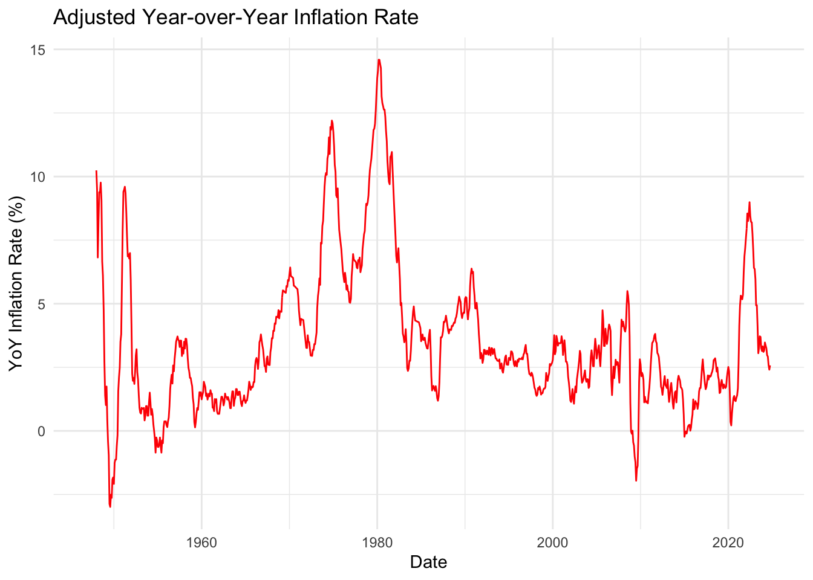
The Year-over-Year (YoY) inflation rate visualization highlights key inflationary periods, such as the 1970s and post-2020 spikes, alongside stable periods like the late 1990s. This demonstrates the cyclical nature of inflation influenced by economic factors.
Let’s retrieve monthly adjusted time series data for a specific US equity (e.g., the S&P 500 ETF “SPY”) using the Alpha Vantage API. The API request includes parameters for the time series function and the equity symbol, allowing access to detailed historical market data for further financial analysis or visualization.
# Define the API endpoint and parameters
us_equity_response <- request(ALPHA_URL) |>
req_options(cookies = NULL) |>
req_url_query(
`function` = "TIME_SERIES_MONTHLY_ADJUSTED", # Enclose 'function' in backticks
symbol = "SPY", # Example: S&P 500 ETF
apikey = ALPHA_ADVANTAGE_API_KEY
) |>
req_perform()# Parse JSON response
equity_data <- us_equity_response |>
resp_body_json() %>%
.$`Monthly Adjusted Time Series`
# Convert JSON data to a data frame
equity_df <- equity_data |>
map_dfr(as_tibble, .id = "date") |>
mutate(
date = as.Date(date), # Convert date to Date type
us_equity_return = as.numeric(`5. adjusted close`) # Adjusted close price
) |>
select(date, us_equity_return)
equity_df <- equity_df |>
arrange(date) |>
mutate(
us_equity_monthly_return = (us_equity_return - lag(us_equity_return)) / lag(us_equity_return) * 100
)
equity_df <- equity_df |>
rename(
us_equity_adjusted = us_equity_return, # Adjusted close column
)
equity_df <- equity_df |>
mutate(date = date |>
floor_date(unit = "month") |> # Get the first of the current month
add_with_rollback(months(1))) # Add one month
# Remove Empty Values
equity_df <- equity_df |>
filter(!is.na(us_equity_monthly_return))
# View the updated data frame
equity_df |> DT:::datatable()The analysis focuses on preparing monthly adjusted equity data for trend and performance evaluation. It includes converting raw data into a structured format, calculating monthly percentage returns, and ensuring clean, consistent data by addressing date formatting and removing missing values.
Now, we will plot clear and visually appealing line chart showing how adjusted close prices for the US equity market have changed over time.
ggplot(equity_df, aes(x = date, y = us_equity_adjusted)) +
geom_line(color = "blue") +
labs(title = "US Equity Market Adjusted Close Prices", x = "Date", y = "Adjusted Close ($)") +
theme_minimal()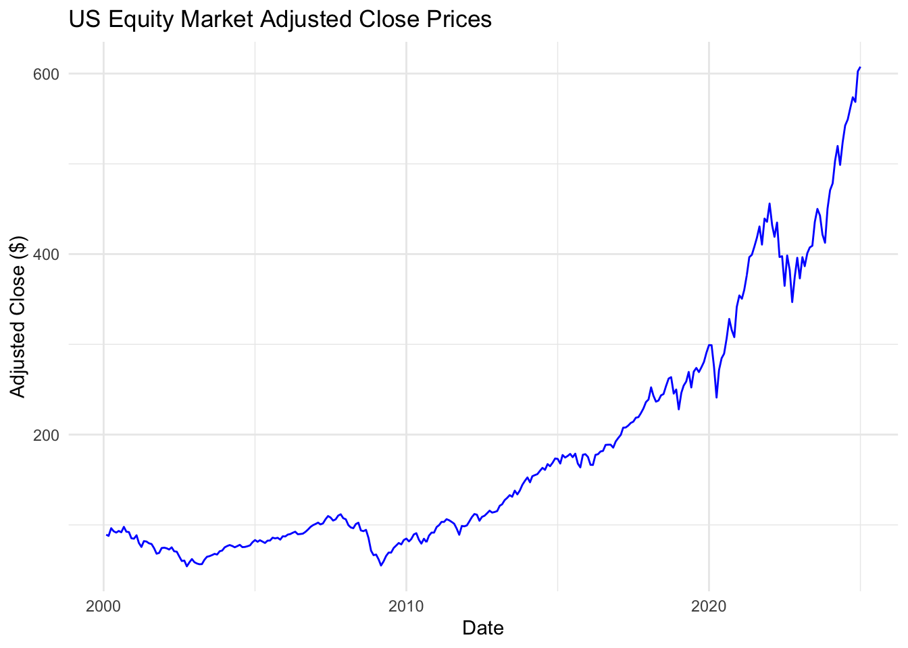
The visualization of adjusted close prices for the US equity market demonstrates a clear upward trend over the past two decades. Periods of volatility, such as the 2008 financial crisis and the 2020 pandemic, are evident, followed by robust recoveries. This long-term growth reflects the resilience of the equity market and its ability to adapt to economic challenges.
let’s create a line chart showing US Equity Market Monthly Returns (%) over time. The x-axis represents the date, and the y-axis shows the percentage returns.
ggplot(equity_df, aes(x = date, y = us_equity_monthly_return)) +
geom_line(color = "red") +
labs(title = "US Equity Market Monthly Returns", x = "Date", y = "Monthly Returns (%)") +
theme_minimal()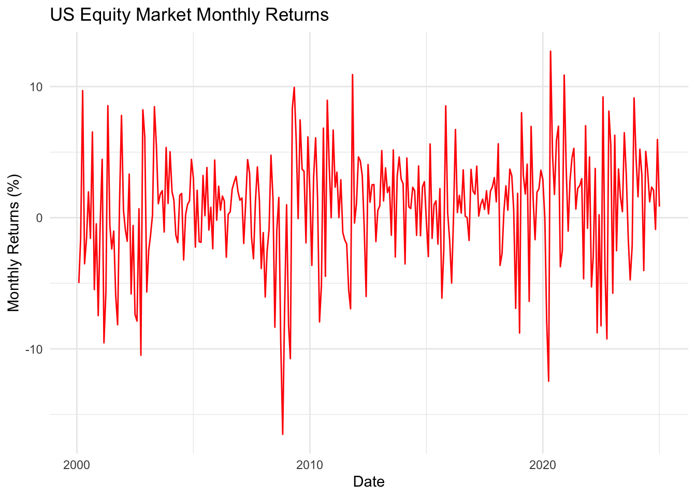
The visualization of US equity market monthly returns highlights significant volatility over the past two decades. Periods of extreme fluctuations, such as during the 2008 financial crisis and the 2020 pandemic, are clearly visible. Despite regular variability, the overall market demonstrates resilience with a balance of positive and negative returns over time, underscoring the dynamic nature of equity investments.
This provides a clear picture of historical international equity market trends, essential for comparing performance with other asset classes in financial analyses.
# Request monthly adjusted data for VEU ETF
intl_equity_response <- request(ALPHA_URL) |>
req_options(cookies = NULL) |>
req_url_query(
`function` = "TIME_SERIES_MONTHLY_ADJUSTED", # Monthly adjusted time series
symbol = "VEU", # Vanguard FTSE All-World ex-US ETF
apikey = ALPHA_ADVANTAGE_API_KEY
) |>
req_perform()intl_equity_data <-intl_equity_response |>
resp_body_json() %>%
.$`Monthly Adjusted Time Series`
# Convert JSON data to a data frame
intl_equity_df <- intl_equity_data |>
map_dfr(as_tibble, .id = "date") |>
mutate(
date = as.Date(date), # Convert date to Date type
intl_equity_return = as.numeric(`5. adjusted close`) # Adjusted close price
) |>
select(date, intl_equity_return)
intl_equity_df <- intl_equity_df |>
arrange(date) |>
mutate(
monthly_return = (intl_equity_return - lag(intl_equity_return)) / lag(intl_equity_return) * 100
)
intl_equity_df <- intl_equity_df |>
rename(
intl_equity_adjusted = intl_equity_return, # Adjusted close column
intl_equity_monthly_return = monthly_return # Monthly returns
)
intl_equity_df <- intl_equity_df |>
mutate(date = date |>
floor_date(unit = "month") |> # Get the first of the current month
add_with_rollback(months(1))) # Add one month
# View the updated data frame
intl_equity_df |> DT::datatable()The data includes adjusted close prices and calculates monthly percentage returns, providing insights into the performance of international equity markets. The structured dataset is prepared for further exploration, allowing for trend analysis and comparison with other markets.
Plot Adjusted Close Prices: This helps verify long-term trends and detect anomalies: This graph displays the International Equity Market Adjusted Close Prices over time.
ggplot(intl_equity_df, aes(x = date, y = intl_equity_adjusted)) +
geom_line(color = "blue") +
labs(title = "International Equity Market Adjusted Close Prices", x = "Date", y = "Adjusted Close ($)") +
theme_minimal()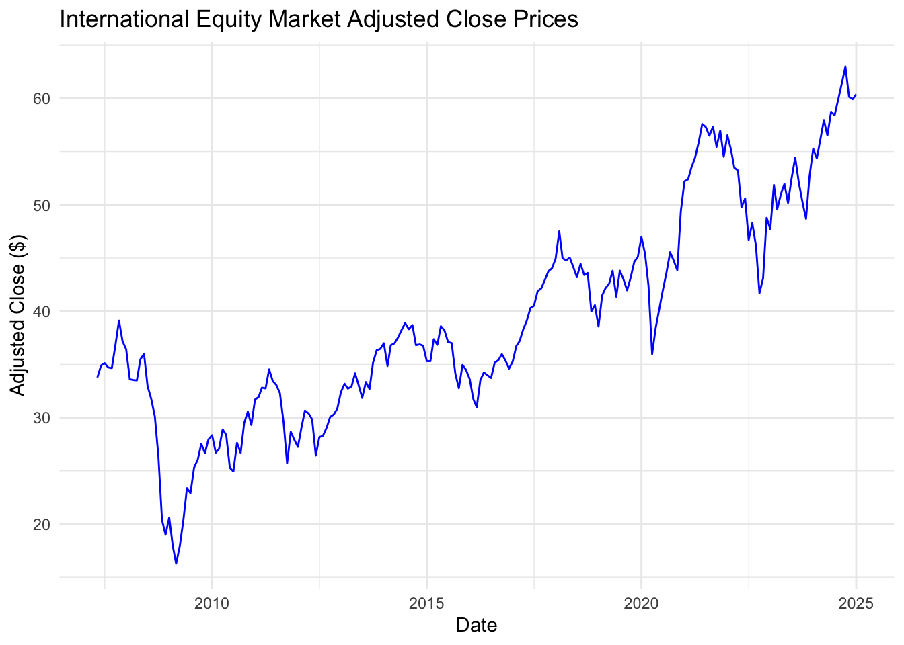
The graph of International Equity Market Adjusted Close Prices highlights the long-term growth and resilience of international markets, despite periods of volatility. . This upward trend highlights the resilience and recovery of international equity markets, reflecting long-term opportunities for investors outside the US.
This analysis focuses on the monthly returns of the international equity market:
ggplot(intl_equity_df, aes(x = date, y = intl_equity_monthly_return)) +
geom_line(color = "red") +
labs(title = "International Equity Market Monthly Returns", x = "Date", y = "Monthly Returns (%)") +
theme_minimal()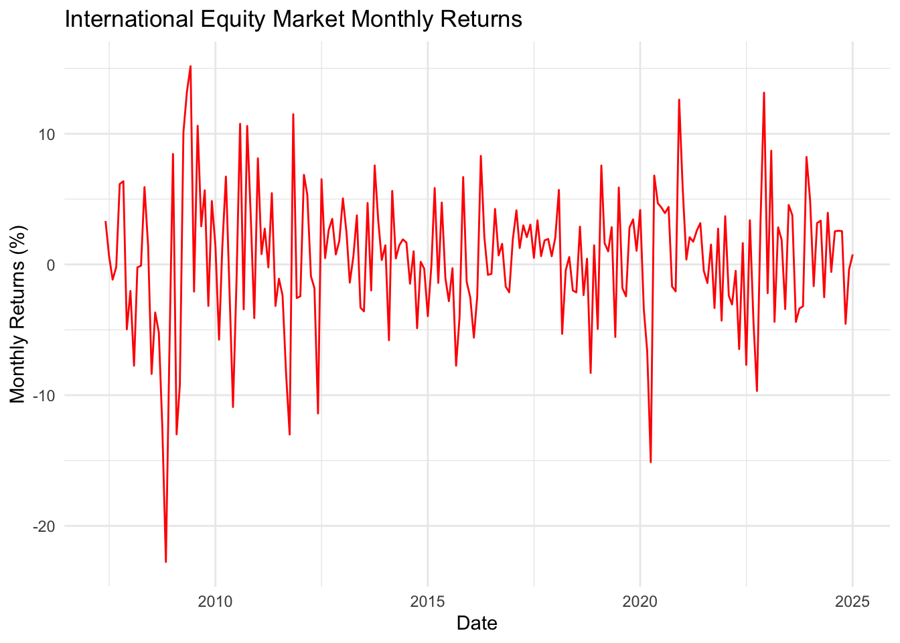
The visualization of international equity market monthly returns highlights significant volatility over time, with sharp declines during major global economic crises such as 2008 and 2020. Despite regular fluctuations, the market shows resilience, with periods of recovery and stability, reflecting the dynamic nature of international investments.
This analysis retrieves monthly adjusted time series data for the iShares Core US Aggregate Bond ETF (AGG), a key benchmark for the US bond market. By examining this data, we aim to understand trends and performance in the fixed-income market, providing valuable insights into bond market dynamics over time.
# Request monthly adjusted data for AGG ETF
bond_response <- request(ALPHA_URL) |>
req_options(cookies = NULL) |>
req_url_query(
`function` = "TIME_SERIES_MONTHLY_ADJUSTED", # Monthly adjusted time series
symbol = "AGG", # iShares Core US Aggregate Bond ETF
apikey = ALPHA_ADVANTAGE_API_KEY
) |>
req_perform()Now, let’s parse the data
# Parse JSON response
bond_data <- bond_response |>
resp_body_json() %>%
.$`Monthly Adjusted Time Series`
# Convert JSON data to a data frame
bond_df <- bond_data |>
map_dfr(as_tibble, .id = "date") |>
mutate(
date = as.Date(date), # Convert date to Date type
bond_return = as.numeric(`5. adjusted close`) # Adjusted close price
) |>
select(date, bond_return)
bond_df <- bond_df |>
arrange(date) |>
mutate(
monthly_return = (bond_return - lag(bond_return)) / lag(bond_return) * 100
)
bond_df <- bond_df |>
rename(
bond_adjusted = bond_return, # Adjusted close column
bond_monthly_return = monthly_return # Monthly returns
)
bond_df <- bond_df |>
mutate(date = date |>
floor_date(unit = "month") |> # Get the first of the current month
add_with_rollback(months(1))) # Add one month
# View the updated data frame
bond_df |> DT::datatable()This structured data enables analysis of bond market performance over time, highlighting trends and volatility in the fixed-income market. It serves as a valuable resource for assessing the stability and dynamics of bonds in a broader portfolio context.
The analysis visualizes the performance of the bond market using the adjusted close prices.
bond_df <- bond_df |>
filter(!is.na(bond_monthly_return))
ggplot(bond_df, aes(x = date, y = bond_adjusted)) +
geom_line(color = "blue") +
labs(title = "Bond Market Adjusted Close Prices", x = "Date", y = "Adjusted Close ($)") +
theme_minimal()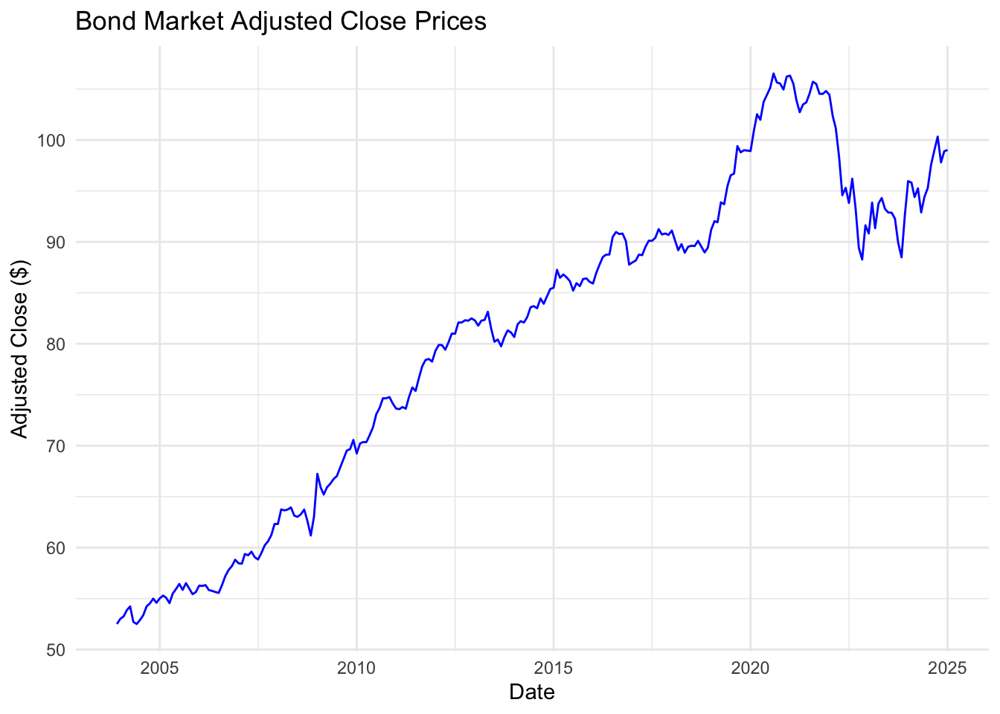
The visualization shows steady growth in bond prices over the years, reflecting the bond market’s stability. Periods of decline, such as during economic downturns, are evident but followed by recoveries, emphasizing the resilience of the bond market and its importance as a relatively stable investment option.
ggplot(bond_df, aes(x = date, y = bond_monthly_return)) +
geom_line(color = "green") +
labs(title = "Bond Market Monthly Returns", x = "Date", y = "Monthly Returns (%)") +
theme_minimal()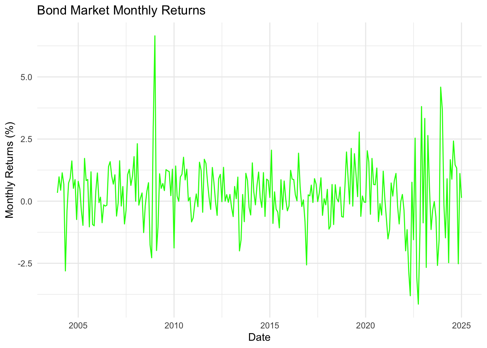
The bond market’s monthly returns exhibit relative stability compared to equities, with occasional spikes during periods of economic volatility, such as the 2008 financial crisis and the 2020 pandemic. The data underscores bonds’ role as a lower-risk investment, offering consistent returns with minimal drastic fluctuations over time.
To fetch Short-Term Debt Returns, we will use the 2-Year US Treasury Yield from the FRED API, which is a widely recognized benchmark for short-term debt.
# Fetch 2-Year Treasury Yield data
response <- request(FRED_URL) |>
req_url_query(
series_id = "DGS2", # 2-Year Treasury Yield
api_key = FRED_API_KEY, # Your FRED API key
file_type = "json", # File format
observation_end = Sys.Date() # Today's date
) |>
req_perform()
# Parse JSON response
debt_data <- response %>%
resp_body_json() %>%
.$observations
# Convert JSON data to a data frame
debt_df <- debt_data |>
map_dfr(as_tibble) |>
mutate(
date = as.Date(date), # Convert date to Date type
short_term_yield = as.numeric(value), # Convert yield data to numeric
.groups = "drop"
) |>
select(date, short_term_yield)
debt_df <- debt_df |>
arrange(date) |>
mutate(
monthly_return = (((1 + short_term_yield/100)^(1/12)) - 1) * 100
)
debt_df <- debt_df |>
rename(
short_term_yield_percent = short_term_yield, # Original yield in %
short_term_monthly_return = monthly_return # Monthly return approximation
)
debt_df_monthly <- debt_df |>
group_by(
year = year(date),
month = month(date)
) |>
summarise(
date = floor_date(first(date), unit = "month"),
short_term_yield_percent = mean(short_term_yield_percent, na.rm = TRUE),
short_term_monthly_return = mean(short_term_monthly_return, na.rm = TRUE),
.groups = "drop"
) |>
ungroup() |>
arrange(date)
debt_df <- debt_df_monthly |>
select(date, short_term_yield_percent, short_term_monthly_return)This analysis focuses on short-term debt returns, an important component of financial planning and investment strategies.
# Plot Short-Term Yields Over Time:
ggplot(debt_df, aes(x = date, y = short_term_yield_percent)) +
geom_line(color = "blue") +
labs(title = "Short-Term Treasury Yield (2-Year)", x = "Date", y = "Yield (%)") +
theme_minimal()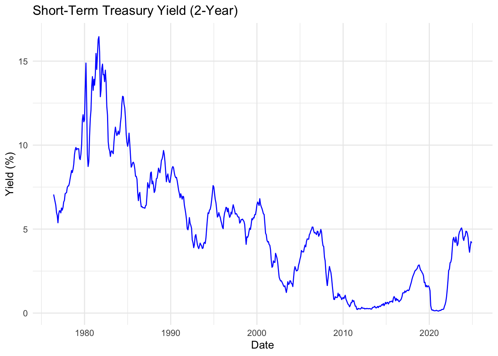
The visualization of the 2-Year Treasury Yield highlights significant fluctuations over time, reflecting changes in economic conditions, monetary policy, and market expectations. Peaks in the yield correspond to periods of high inflation and tight monetary policy, such as in the 1980s.
ggplot(debt_df, aes(x = date, y = short_term_monthly_return)) +
geom_line(color = "green") +
labs(title = "Short-Term Debt Monthly Returns", x = "Date", y = "Monthly Returns (%)") +
theme_minimal()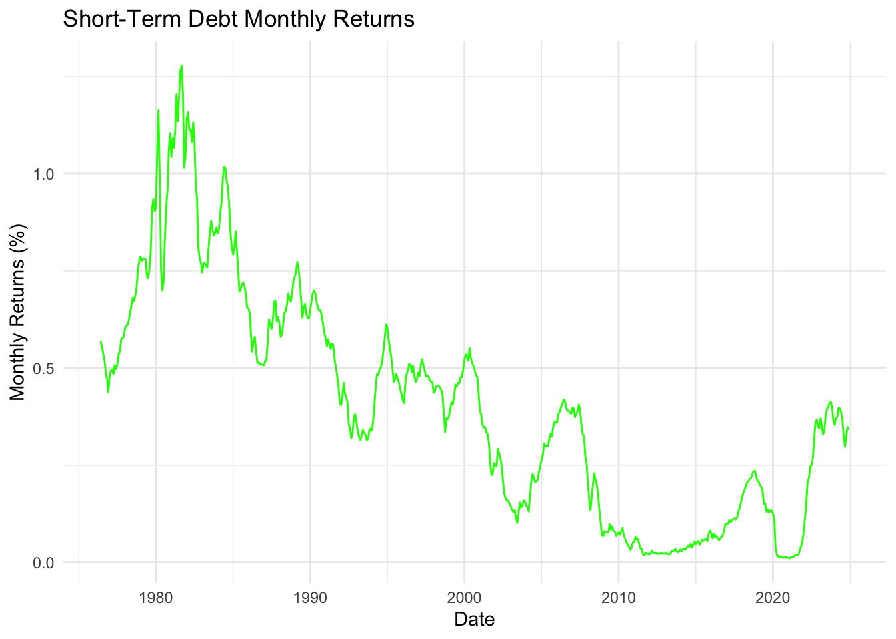
The visualization of short-term debt monthly returns illustrates the impact of economic cycles on returns. Peaks, such as those in the late 1970s and early 1980s, align with periods of high inflation and elevated interest rates. The steady decline and stabilization in subsequent decades reflect accommodative monetary policies and economic recovery phases. Recent upticks highlight the response to changing interest rate environments, emphasizing the sensitivity of short-term debt to macroeconomic conditions.
Identify and download historical data series for each of the above inputs to your Monte Carlo analysis. If necessary, “downsample” each series to a monthly frequency and join them together in a data.frame.
You must use at least one data series from AlphaVantage and one from FRED. You must use the APIs of each service to access this data and, as noted above, you need to use the “raw” API, relying only on the httr2 package (or similar) and not wrapper packages like quantmod or alphavantager.
Once we have acquired and cleaned the input data, the next step is to conduct a basic exploratory data analysis (EDA) to identify key characteristics of the dataset. In this stage, we will examine factors such as correlations, long-term averages, and variances. This will provide us with an understanding of the relationships and trends within the data.
As part of our analysis, we will compute the long-run monthly average value for each series, which will be used in subsequent tasks.
To begin, we will combine the cleaned and processed data from all sources into a single data frame. This consolidated dataset will allow us to perform comprehensive EDA, providing insights into the overall structure and properties of the data.
In this step, we integrated multiple datasets related to economic and financial indicators into a single, unified dataset:
# Ensure all datasets have a common date format and merge them
combined_data <- reduce(
list(
inflation_df |> select(date, inflation_cpi, mom_inflation_rate, yoy_inflation_rate),
wage_growth_df |> select(date, wage_growth),
equity_df |> select(date, us_equity_monthly_return),
intl_equity_df |> select(date, intl_equity_monthly_return),
bond_df |> select(date, bond_monthly_return),
debt_df |> select(date, short_term_monthly_return)
),
full_join,
by = "date"
)
combined_data <- combined_data %>%
filter(complete.cases(.))
combined_data |> DT::datatable()The resulting dataset is a comprehensive, time-aligned dataset containing multiple economic and financial indicators, ready for analysis and comparison.
In this step, we calculated summary statistics for the key economic and financial indicators in the combined dataset:
summary_stats <- combined_data |>
summarize(
avg_wage_growth = mean(wage_growth, na.rm = TRUE),
avg_mom_inflation = mean(mom_inflation_rate, na.rm = TRUE),
avg_yoy_inflation = mean(yoy_inflation_rate, na.rm = TRUE),
avg_us_equity_return = mean(us_equity_monthly_return, na.rm = TRUE),
avg_intl_equity_return = mean(intl_equity_monthly_return, na.rm = TRUE),
avg_bond_return = mean(bond_monthly_return, na.rm = TRUE),
avg_short_term_return = mean(short_term_monthly_return, na.rm = TRUE)
)
# View summary statistics
summary_stats |> DT::datatable()These results allow for a comprehensive comparison across indicators, helping to identify relationships between economic trends, market behaviors, and investment performance.
let’s analyze the relationships between various financial metrics by computing a correlation matrix.
correlation_matrix <- combined_data |>
select(-date) |>
drop_na() |> # Remove rows with NA values
cor()
# Print the correlation matrix
correlation_matrix |> DT::datatable()This matrix provides a detailed understanding of how indicators relate to one another, revealing patterns and dependencies for deeper analysis.
Now let’s create a cohesive visualization of multiple time series related to economic and market indicators. Rhis analysis provides a clear view of how different economic and market factors have evolved over time, enabling comparative insights and trend analysis.
# Plot individual time series
plot1 <- ggplot(combined_data, aes(x = date, y = wage_growth)) +
geom_line(color = "blue") +
labs(title = "Wage Growth Over Time", x = "Date", y = "Wage Growth (%)")
plot2 <- ggplot(combined_data, aes(x = date, y = mom_inflation_rate)) +
geom_line(color = "red") +
labs(title = "MoM Inflation Rate Over Time", x = "Date", y = "Inflation (%)")
plot3 <- ggplot(combined_data, aes(x = date, y = us_equity_monthly_return)) +
geom_line(color = "green") +
labs(title = "US Equity Market Returns Over Time", x = "Date", y = "Monthly Return (%)")
plot4 <- ggplot(combined_data, aes(x = date, y = intl_equity_monthly_return)) +
geom_line(color = "orange") +
labs(title = "International Equity Market Returns Over Time", x = "Date", y = "Monthly Return (%)")
# Combine the plots
plot1 + plot2 + plot3 + plot4 + plot_layout(ncol = 2)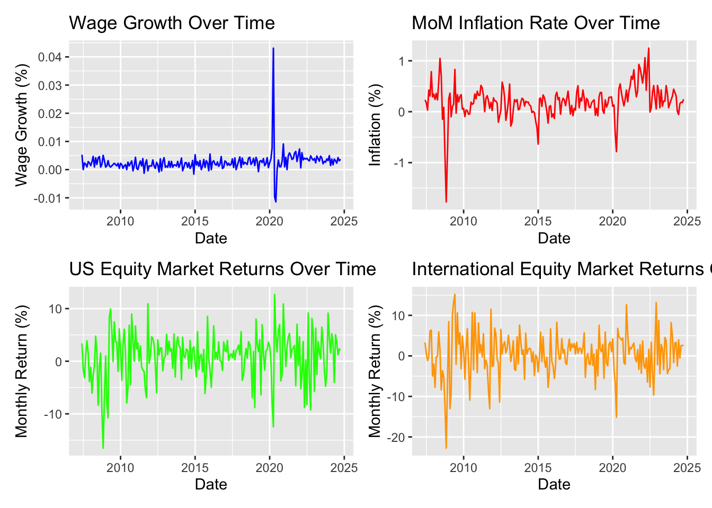
The visualizations collectively highlight key economic and financial trends over time. Wage growth shows a generally steady pattern with notable disruptions, such as during the pandemic. Inflation rates exhibit fluctuations, with spikes during periods of economic instability. US and international equity markets reflect consistent volatility, underscoring the dynamic nature of investments, while revealing similar patterns of recovery and growth post-crisis. Together, these trends provide a comprehensive view of the interconnectedness of labor, inflation, and financial markets, emphasizing their collective impact on economic stability and performance.
This analysis calculates the long-run monthly averages, medians, and standard deviations for key economic and financial series.
# Calculate long-run monthly averages for each series
long_run_averages <- tibble(
Series = c("Wage Growth", "MoM Inflation Rate", "US Equity Market Returns",
"International Equity Market Returns", "Bond Market Returns",
"Short-Term Debt Returns"),
Mean = c(
mean(wage_growth_df$wage_growth, na.rm = TRUE),
mean(inflation_df$mom_inflation_rate, na.rm = TRUE),
mean(equity_df$us_equity_monthly_return, na.rm = TRUE),
mean(intl_equity_df$intl_equity_monthly_return, na.rm = TRUE),
mean(bond_df$bond_monthly_return, na.rm = TRUE),
mean(debt_df$short_term_monthly_return, na.rm = TRUE)
),
Median = c(
median(wage_growth_df$wage_growth, na.rm = TRUE),
median(inflation_df$mom_inflation_rate, na.rm = TRUE),
median(equity_df$us_equity_monthly_return, na.rm = TRUE),
median(intl_equity_df$intl_equity_monthly_return, na.rm = TRUE),
median(bond_df$bond_monthly_return, na.rm = TRUE),
median(debt_df$short_term_monthly_return, na.rm = TRUE)
),
SD = c(
sd(wage_growth_df$wage_growth, na.rm = TRUE),
sd(inflation_df$mom_inflation_rate, na.rm = TRUE),
sd(equity_df$us_equity_monthly_return, na.rm = TRUE),
sd(intl_equity_df$intl_equity_monthly_return, na.rm = TRUE),
sd(bond_df$bond_monthly_return, na.rm = TRUE),
sd(debt_df$short_term_monthly_return, na.rm = TRUE)
)
)
# View the long-run monthly averages
long_run_averages |> DT::datatable()The long-run averages, medians, and standard deviations provide a clear picture of the behavior and variability of key economic and financial indicators.
Now that you have acquired data, implement the TRS and ORP formulas above and compare the value of each of them for the first month of retirement. To do this, you may assume that your hypothetical employee:
Joined CUNY in the first month of the historical data Retired from CUNY at the end of the final month of data You will need to select a starting salary for your employee. Use historical data for wage growth and inflation and assume that the TRS and ORP parameters did not change over time. (That is, the employee contribution “brackets” are not inflation adjusted; the employee will have to make larger contributions as income rises over the span of a 20+ year career.)
This simulation models the growth of a hypothetical salary over time based on observed wage growth rates from the dataset. Starting with an initial salary, the model iteratively applies the monthly wage growth rates to project the salary progression
# Step 1: Set initial salary
starting_salary <- 50000 # Hypothetical starting salary in dollars
# Step 2: Initialize salary vector
n_months <- nrow(combined_data)
salary <- numeric(n_months)
salary[1] <- starting_salary # Set initial salary
# Step 3: Calculate salary growth iteratively
for (i in 2:n_months) {
salary[i] <- salary[i - 1] * (1 + combined_data$wage_growth[i])
}
# Step 4: Combine results into a data frame
salary_simulation <- data.frame(
Date = combined_data$date,
Salary = salary
)
# Step 5: Visualize the salary growth
library(ggplot2)
ggplot(salary_simulation, aes(x = Date, y = Salary)) +
geom_line(color = "blue") +
labs(
title = "Simulated Salary Growth Over Time",
x = "Date",
y = "Salary ($)"
) +
theme_minimal()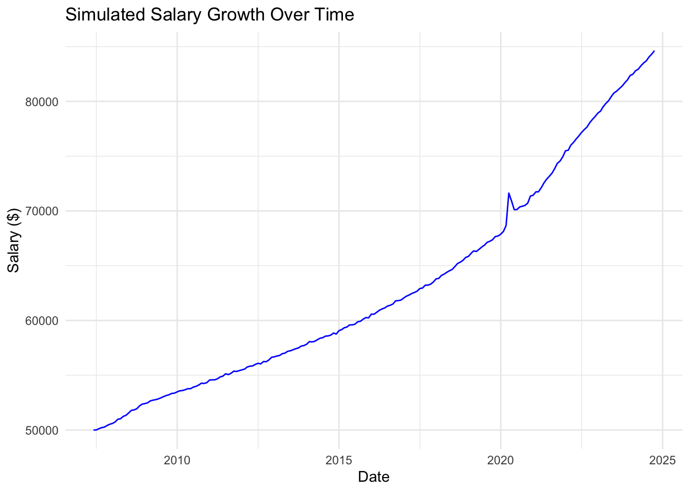
The simulated salary growth over time demonstrates a steady upward trajectory, reflecting consistent annual increases in earnings. The notable inflection point aligns with a period of economic disruption, such as the COVID-19 pandemic, showing a temporary impact on salary trends. This chart underscores the resilience of salary growth in the long term despite short-term challenges, providing insights into financial stability and progression over time.
For TRS contributions, we simulated the growth of the retirement fund by assuming the employee contributes 5% of their monthly salary throughout their career. The TRS fund grows steadily with a guaranteed annual return rate of 4%, compounded monthly. By the time of retirement, the total fund value is calculated based on these contributions and the compounded growth, providing a clear picture of the cumulative savings achieved under the TRS plan.
# Step 1: Define TRS parameters
trs_contribution_rate <- 0.05 # 5% of salary
trs_annual_return <- 0.04 # 4% annual return
trs_monthly_return <- trs_annual_return / 12 # Monthly return
# Step 2: Calculate monthly contributions
salary_simulation <- salary_simulation |>
mutate(
Monthly_Contribution = (Salary / 12) * trs_contribution_rate # Divide annual salary by 12
)
# Step 3: Simulate TRS fund growth
n_months <- nrow(salary_simulation)
trs_fund <- numeric(n_months)
trs_fund[1] <- salary_simulation$Monthly_Contribution[1] # Initial contribution
for (i in 2:n_months) {
trs_fund[i] <- trs_fund[i - 1] * (1 + trs_monthly_return) +
salary_simulation$Monthly_Contribution[i]
}
# Step 4: Add TRS fund values to the dataset
salary_simulation <- salary_simulation |>
mutate(TRS_Fund_Value = trs_fund)
# Step 5: Visualize TRS fund growth over time
ggplot(salary_simulation, aes(x = Date, y = TRS_Fund_Value)) +
geom_line(color = "blue") +
labs(
title = "TRS Fund Value Over Time",
x = "Date",
y = "Cumulative TRS Fund Value ($)"
) +
theme_minimal()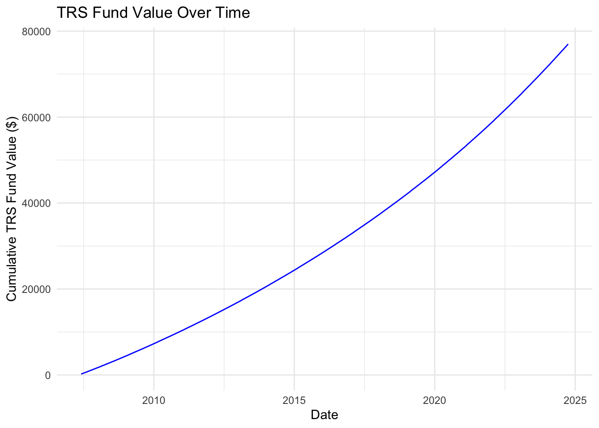
The chart highlights steady TRS fund growth over time, driven by consistent contributions and compounded returns, illustrating the power of long-term saving.
This analysis simulates the growth of an Optional Retirement Plan (ORP) fund over time, integrating weighted returns from equities, bonds, and short-term debt based on a defined portfolio allocation. It combines salary data and monthly contributions with market performance to project the ORP fund value, offering insights into its cumulative growth.
# Step 1: Define ORP parameters
orp_contribution_rate <- 0.05 # 5% of salary
orp_weights <- c(0.6, 0.3, 0.1) # Portfolio weights: 60% equity, 30% bonds, 10% short-term debt
# Step 2: Merge returns data with salary data
returns_combined <- combined_data |>
select(date, us_equity_monthly_return, bond_monthly_return, short_term_monthly_return) |>
right_join(salary_simulation, by = c("date" = "Date"))
# Step 3: Calculate weighted monthly returns
returns_combined <- returns_combined |>
mutate(
Weighted_Return = orp_weights[1] * us_equity_monthly_return +
orp_weights[2] * bond_monthly_return +
orp_weights[3] * short_term_monthly_return,
Monthly_Contribution = (Salary / 12) * orp_contribution_rate
)
# Step 4: Simulate ORP fund growth
n_months <- nrow(returns_combined)
orp_fund <- numeric(n_months)
orp_fund[1] <- returns_combined$Monthly_Contribution[1] # Initial contribution
for (i in 2:n_months) {
orp_fund[i] <- orp_fund[i - 1] * (1 + returns_combined$Weighted_Return[i] / 100) +
returns_combined$Monthly_Contribution[i]
}
# Step 5: Add ORP fund values to the dataset
returns_combined <- returns_combined |>
mutate(ORP_Fund_Value = orp_fund)
# Step 6: Visualize ORP fund growth
ggplot(returns_combined, aes(x = date, y = ORP_Fund_Value)) +
geom_line(color = "red") +
labs(
title = "ORP Fund Value Over Time",
x = "Date",
y = "Cumulative ORP Fund Value ($)"
) +
theme_minimal()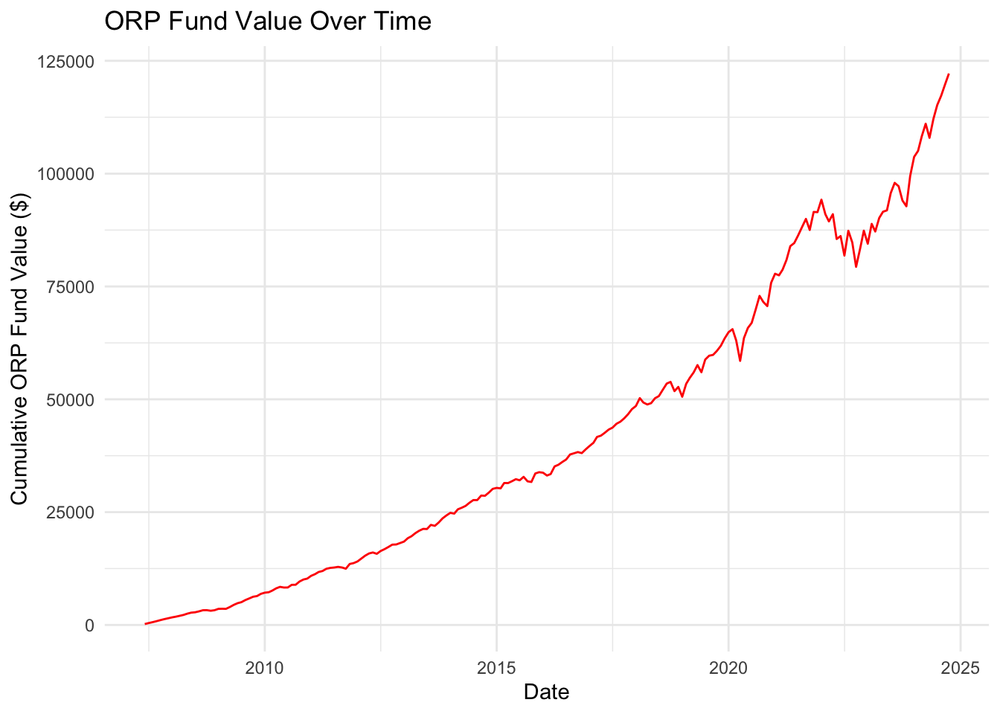
The ORP simulation shows consistent growth, emphasizing the benefits of regular contributions and a diversified portfolio for long-term financial stability.
This section introduces inflation-adjusted analysis to provide a realistic comparison of the TRS and ORP fund values over time.
# Step 1: Normalize CPI data to create a cumulative inflation factor
inflation_adjustment <- combined_data |>
arrange(date) |>
mutate(
cumulative_inflation_factor = inflation_cpi / inflation_cpi[1] # Normalize to first month's CPI
) |>
select(date, cumulative_inflation_factor)
# Step 2: Merge inflation adjustment data with TRS and ORP datasets
adjusted_data <- returns_combined |>
left_join(inflation_adjustment, by = "date") |>
mutate(
TRS_Inflation_Adjusted = TRS_Fund_Value / cumulative_inflation_factor,
ORP_Inflation_Adjusted = ORP_Fund_Value / cumulative_inflation_factor
)
# Step 3: Visualize the inflation-adjusted TRS and ORP fund values
ggplot(adjusted_data) +
geom_line(aes(x = date, y = TRS_Inflation_Adjusted, color = "TRS Inflation-Adjusted")) +
geom_line(aes(x = date, y = ORP_Inflation_Adjusted, color = "ORP Inflation-Adjusted")) +
labs(
title = "Inflation-Adjusted TRS and ORP Fund Values Over Time",
x = "Date",
y = "Inflation-Adjusted Fund Value ($)",
color = "Plan"
) +
theme_minimal()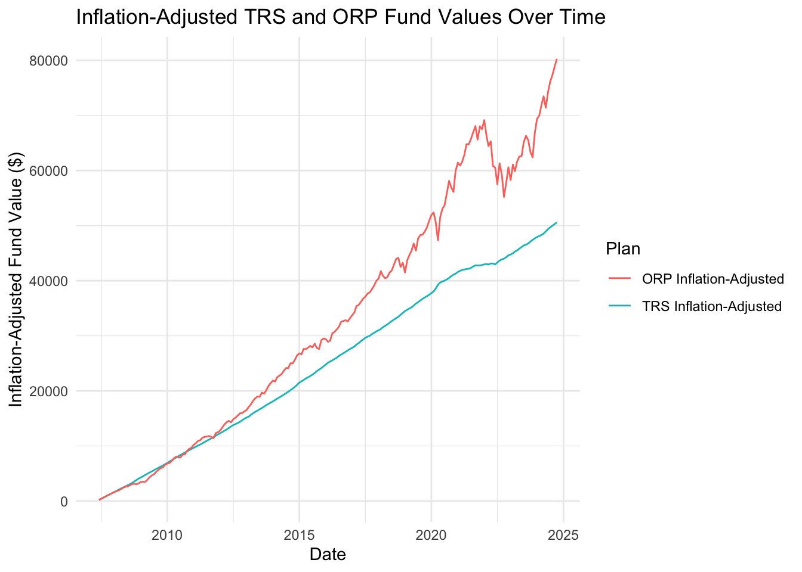
The ORP plan outperforms TRS in inflation-adjusted terms due to its diversified investments, offering higher growth potential but with increased risk.
To compare first-month retirement payouts, we calculated inflation-adjusted monthly payments for both TRS and ORP. TRS offers a predictable payout at a fixed annual rate (5% of the final fund value, divided monthly) with inflation adjustments. ORP, on the other hand, allows withdrawals at a fixed annual rate (e.g., 3.5%) while adjusting for inflation to preserve purchasing power. A comparison table was created to summarize the inflation-adjusted final fund values and the corresponding monthly payouts for both plans, highlighting their financial outcomes at the start of retirement.
# Ensure adjusted_data is sorted by date
adjusted_data <- adjusted_data |> arrange(date)
# Extract the final inflation-adjusted fund values
trs_final_value <- tail(adjusted_data$TRS_Inflation_Adjusted, 1)
orp_final_value <- tail(adjusted_data$ORP_Inflation_Adjusted, 1)
# Step 2: Define payout rates
trs_annual_payout_rate <- 0.05 # 5% annual payout rate
orp_safe_withdrawal_rate <- 0.035 # 3.5% safe withdrawal rate
# Step 3: Calculate monthly payouts
trs_monthly_payout <- (trs_final_value * trs_annual_payout_rate) / 12
orp_monthly_payout <- (orp_final_value * orp_safe_withdrawal_rate) / 12
# Step 4: Create a comparison table
comparison_table <- data.frame(
Plan = c("TRS", "ORP"),
Final_Inflation_Adjusted_Value = c(trs_final_value, orp_final_value),
Monthly_Payout = c(trs_monthly_payout, orp_monthly_payout)
)
# Step 5: Display the comparison table
library(DT)
comparison_table |> datatable(
caption = "Comparison of Inflation-Adjusted TRS and ORP Final Values and Monthly Payouts"
)The comparison reveals that the ORP plan generates a higher final inflation-adjusted fund value compared to TRS, leading to a larger monthly payout. This difference highlights ORP’s greater growth potential due to its diversified investment strategy, while TRS provides a more stable but comparatively lower payout.
Modify your simulation from the previous section to project an employee’s pension benefit (TRS) or withdrawal amount (ORP) from retirement until death. (You will need to select an estimated death age.) In order to implement cost-of-living-adjustments (TRS) and future market returns (ORP), you can use the long-run averages you computed previously. This “fixed rate” assumption is rather limiting, but we will address it below.
As you compare the plans, be sure to consider:
Whether the employee runs out of funds before death and/or has funds to leave to heirs (ORP only) Average monthly income (TRS vs ORP) Maximum and minimum gap in monthly income between TRS and ORP As noted above, you can ignore the effect of taxes throughout this analysis.
For the TRS simulation, we modeled monthly payouts from retirement at age 65 until age 85, covering 20 years (240 months). Monthly payments were based on the inflation-adjusted TRS fund value, with a fixed annual payout rate of 5% divided into monthly amounts. Cost-of-Living Adjustments (COLA) were applied using the average inflation rate to maintain purchasing power. The simulation provided a detailed breakdown of monthly payouts, ages, and inflation-adjusted income, offering a clear picture of stable and predictable retirement income over the 20-year period.
# Step 1: Define Parameters
# 1. Retirement Parameters
retirement_age <- 65 # Age at retirement
death_age <- 85 # Assumed death age
years_in_retirement <- death_age - retirement_age
months_in_retirement <- years_in_retirement * 12
# 2. Economic Parameters
# Average inflation rate (using combined_data)
average_inflation_rate <- mean(combined_data$mom_inflation_rate, na.rm = TRUE) / 100 # Monthly inflation rate
# Cost-of-Living Adjustment (COLA) for TRS
COLA <- min(0.03, max(0.01, average_inflation_rate / 2)) # Apply the capped formula
# Portfolio return (weighted by asset allocation)
# Asset allocation for age 65-74
orp_weights_65_74 <- c(0.34, 0.23, 0.43, 0) # US Equities, Intl Equities, Bonds, Short-Term Debt
average_returns <- c(
mean(combined_data$us_equity_monthly_return, na.rm = TRUE) / 100,
mean(combined_data$intl_equity_monthly_return, na.rm = TRUE) / 100,
mean(combined_data$bond_monthly_return, na.rm = TRUE) / 100,
mean(combined_data$short_term_monthly_return, na.rm = TRUE) / 100
)
portfolio_return_65_74 <- sum(orp_weights_65_74 * average_returns)
# Asset allocation for age 75-85
orp_weights_75_85 <- c(0.19, 0.13, 0.62, 0.06) # Adjusted for older age group
portfolio_return_75_85 <- sum(orp_weights_75_85 * average_returns)
# 3. TRS Parameters
# Final Average Salary (from earlier computation)
final_average_salary <- tail(adjusted_data$TRS_Inflation_Adjusted, 1) # Replace with actual FAS value if known
# Pension calculation (30 years of service assumed for TRS)
annual_pension <- final_average_salary * 0.48 # 48% of FAS
monthly_pension <- annual_pension / 12 # Convert to monthly
# 4. ORP Parameters
# Initial ORP balance (from earlier computation)
initial_orp_balance <- tail(adjusted_data$ORP_Inflation_Adjusted, 1) # Final ORP fund value at retirement
# Withdrawal rate
annual_withdrawal_rate <- 0.035 # Assume 3.5%
monthly_withdrawal_rate <- annual_withdrawal_rate / 12
# Confirm parameter values
cat("Retirement Parameters:\n")Retirement Parameters:cat("Retirement Age:", retirement_age, "\n")Retirement Age: 65 cat("Death Age:", death_age, "\n")Death Age: 85 cat("Months in Retirement:", months_in_retirement, "\n\n")Months in Retirement: 240 cat("Economic Parameters:\n")Economic Parameters:cat("Average Inflation Rate:", average_inflation_rate * 100, "%\n")Average Inflation Rate: 0.2028477 %cat("COLA (TRS):", COLA * 100, "%\n")COLA (TRS): 1 %cat("Portfolio Return (Age 65-74):", portfolio_return_65_74 * 100, "%\n")Portfolio Return (Age 65-74): 0.5234864 %cat("Portfolio Return (Age 75-85):", portfolio_return_75_85 * 100, "%\n\n")Portfolio Return (Age 75-85): 0.3989437 %cat("TRS Parameters:\n")TRS Parameters:cat("Final Average Salary (FAS):", final_average_salary, "\n")Final Average Salary (FAS): 50576.55 cat("Monthly Pension:", monthly_pension, "\n\n")Monthly Pension: 2023.062 cat("ORP Parameters:\n")ORP Parameters:cat("Initial ORP Balance:", initial_orp_balance, "\n")Initial ORP Balance: 80270.13 cat("Monthly Withdrawal Rate:", monthly_withdrawal_rate * 100, "%\n")Monthly Withdrawal Rate: 0.2916667 %The TRS plan provides stable, inflation-adjusted monthly payouts, while the ORP plan offers higher growth potential but depends on market performance. The choice depends on individual risk tolerance and retirement goals.
trs_final_value <- tail(adjusted_data$TRS_Inflation_Adjusted, 1) # Final TRS fund value
trs_annual_payout_rate <- 0.05 # Annual payout rate
monthly_payout <- trs_final_value * trs_annual_payout_rate / 12 # Fixed monthly payout
average_inflation_rate <- mean(combined_data$mom_inflation_rate, na.rm = TRUE) / 100 # Average monthly inflation
# Step 2: Simulate TRS payouts with COLA
trs_simulation <- data.frame(
Month = 1:months_in_retirement,
Year = rep(retirement_age:(retirement_age + years_in_retirement - 1), each = 12),
Age = retirement_age + (1:months_in_retirement) / 12
) |>
mutate(
Inflation_Adjusted_Payout = monthly_payout * (1 + average_inflation_rate)^(Month - 1)
)
# Step 3: Visualize TRS payouts over time
library(ggplot2)
ggplot(trs_simulation, aes(x = Month, y = Inflation_Adjusted_Payout)) +
geom_line(color = "blue") +
labs(
title = "TRS Monthly Income with Cost-of-Living Adjustment (COLA)",
x = "Month in Retirement",
y = "Inflation-Adjusted Monthly Income ($)"
) +
theme_minimal()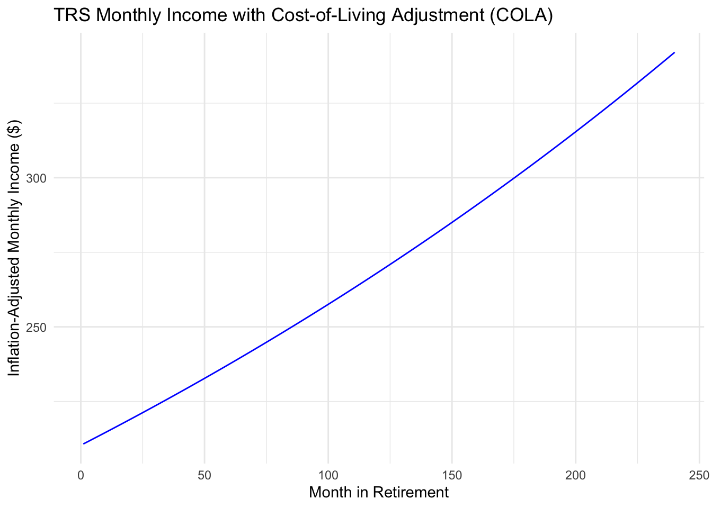
The TRS plan provides inflation-adjusted monthly income, ensuring purchasing power is maintained throughout retirement. This stability makes it a dependable option for retirees prioritizing predictable and steady financial support over time.
For the ORP simulation, we modeled retirement income and fund growth from age 65 to 85 (20 years or 240 months). The portfolio was balanced with 60% in equities, 30% in bonds, and 10% in short-term debt, using average historical returns. Monthly withdrawals were set at 3.5% annually, adjusted for inflation to maintain purchasing power. Each month, withdrawals reduced the fund balance while portfolio returns replenished it. The simulation tracked the fund’s performance to determine if it lasted until age 85. The results included a detailed breakdown of withdrawals, balances, and inflation-adjusted income, along with a plot showing how the fund evolved over time.
# Step 1: Parameters
orp_final_value <- tail(adjusted_data$ORP_Inflation_Adjusted, 1) # Final ORP fund value
orp_annual_withdrawal_rate <- 0.04 # Annual withdrawal rate
monthly_withdrawal_rate <- orp_annual_withdrawal_rate / 12
average_portfolio_return <- mean(returns_combined$Weighted_Return, na.rm = TRUE) / 100
# Portfolio return
portfolio_weights <- c(0.6, 0.3, 0.1) # Equity, bonds, short-term debt
average_inflation_rate <- mean(combined_data$mom_inflation_rate, na.rm = TRUE) / 100
# Step 2: Initialize ORP simulation
orp_simulation <- data.frame(
Month = 1:months_in_retirement,
Year = rep(retirement_age:(retirement_age + years_in_retirement - 1), each = 12),
Age = retirement_age + (1:months_in_retirement) / 12
) |>
mutate(
Inflation_Adjusted_Withdrawal = 0,
ORP_Balance = orp_final_value
)
for (i in 1:nrow(orp_simulation)) {
# Determine the portfolio return based on age
portfolio_return <- ifelse(
orp_simulation$Age[i] < 75,
portfolio_return_65_74,
portfolio_return_75_85
)
if (i == 1) {
# Initial withdrawal and balance
orp_simulation$Inflation_Adjusted_Withdrawal[i] <-
orp_simulation$ORP_Balance[i] * monthly_withdrawal_rate
orp_simulation$ORP_Balance[i] <-
orp_simulation$ORP_Balance[i] - orp_simulation$Inflation_Adjusted_Withdrawal[i]
} else {
# Inflation-adjusted withdrawal
orp_simulation$Inflation_Adjusted_Withdrawal[i] <-
orp_simulation$Inflation_Adjusted_Withdrawal[i - 1] * (1 + average_inflation_rate)
# Portfolio growth
portfolio_growth <-
orp_simulation$ORP_Balance[i - 1] * portfolio_return
# Update balance
new_balance <-
orp_simulation$ORP_Balance[i - 1] + portfolio_growth - orp_simulation$Inflation_Adjusted_Withdrawal[i]
# Prevent negative balances
orp_simulation$ORP_Balance[i] <- max(new_balance, 0)
}
}
ggplot(orp_simulation, aes(x = Month, y = Inflation_Adjusted_Withdrawal)) +
geom_line(color = "blue", size = 1) +
labs(
title = "Monthly Inflation-Adjusted Withdrawal Over Time",
x = "Month in Retirement",
y = "Inflation-Adjusted Monthly Withdrawal ($)"
) +
theme_minimal()Warning: Using `size` aesthetic for lines was deprecated in ggplot2 3.4.0.
ℹ Please use `linewidth` instead.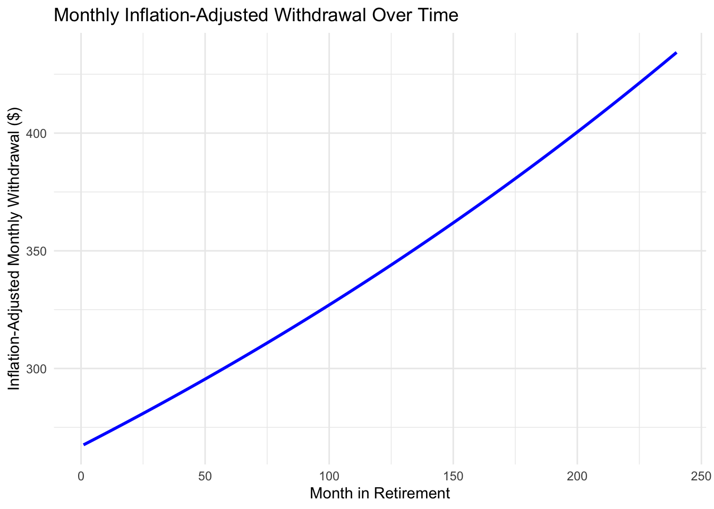
The chart displays the inflation-adjusted monthly withdrawals from the ORP fund over retirement, ensuring the withdrawals maintain their real purchasing power. The upward trend reflects the compounding effect of inflation, demonstrating the importance of portfolio growth to sustain income levels in real terms throughout retirement.
# Step 4: Visualize ORP fund balance over time
ggplot(orp_simulation, aes(x = Month, y = ORP_Balance)) +
geom_line(color = "blue", size = 1) +
labs(
title = "ORP Balance Over Time",
x = "Month in Retirement",
y = "ORP Fund Value"
) +
theme_minimal()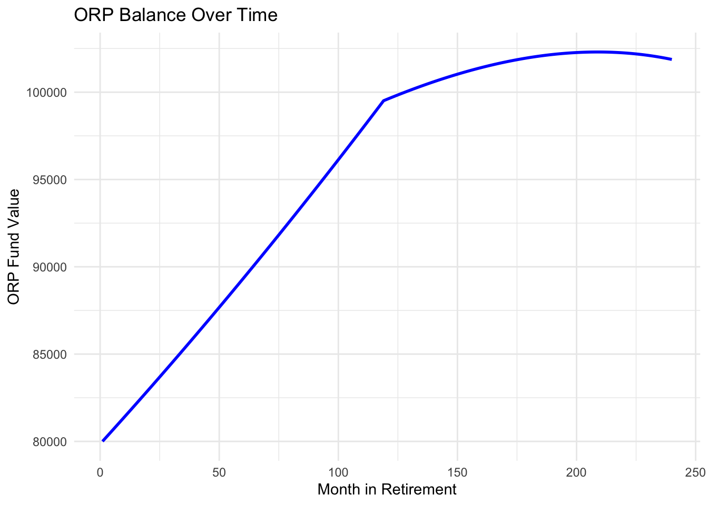
The chart illustrates the ORP (Optional Retirement Plan) fund balance over the retirement period. It shows an initial growth phase as the fund benefits from portfolio returns exceeding withdrawals, followed by a plateau and eventual decline as withdrawals increase with inflation, outpacing returns. This highlights the importance of effective portfolio management to sustain fund longevity.
Objective: Check if the ORP fund balance (ORP_Balance) becomes zero before the retirement period ends (death age).
Steps: Inspect the ORP_Balance column in the orp_simulation dataframe. Identify the first instance (if any) where the balance drops to zero. If the balance is still positive at the last retirement month, the employee does not run out of funds. Code:
last_balance <- tail(orp_simulation$ORP_Balance, 1)
if (last_balance > 0) {
message("Employee has funds left: ", round(last_balance, 2), " at the end of retirement.")
} else {
message("Employee runs out of funds at month: ", which(orp_simulation$ORP_Balance == 0)[1])
}Employee has funds left: 101875.34 at the end of retirement.The analysis reveals that the ORP fund remains solvent throughout the retirement period, ending with a positive balance of $101,875.34
Objective: Calculate the average monthly income for both plans during the retirement period.
Steps:
Compute the average of the Monthly_Income column in the trs_simulation and orp_simulation dataframes. Also,Compare the averages.
avg_trs_income <- mean(trs_simulation$Inflation_Adjusted_Payout, na.rm = TRUE)
avg_orp_income <- mean(orp_simulation$Inflation_Adjusted_Withdrawal, na.rm = TRUE)
message("Average TRS Income: ", round(avg_trs_income, 2))Average TRS Income: 271.13message("Average ORP Income: ", round(avg_orp_income, 2))Average ORP Income: 344.25The ORP offers a higher average monthly income ($344.25) compared to TRS ($271.13), highlighting its potential to provide better financial support during retirement. However, the choice between the two plans should consider individual risk tolerance and the importance of guaranteed income.
Objective: Identify the largest and smallest differences in monthly income between the two plans.
income_gap <- trs_simulation$Inflation_Adjusted_Payout - orp_simulation$Inflation_Adjusted_Withdrawal
max_gap <- max(income_gap, na.rm = TRUE)
min_gap <- min(income_gap, na.rm = TRUE)
message("Maximum gap in monthly income: ", round(max_gap, 2))Maximum gap in monthly income: -56.83message("Minimum gap in monthly income: ", round(min_gap, 2))Minimum gap in monthly income: -92.24The analysis shows that ORP consistently outperforms TRS in monthly payouts, with the largest gap being -56.83 and the smallest gap -92.24, both favoring ORP. This highlights ORP’s stronger income generation, though TRS may appeal to those seeking stability over higher returns.
Using your historical data, generate several (at least 200) “bootstrap histories” suitable for a Monte Carlo analysis. Use bootstrap sampling, i.e. sampling with replacement, to generate values for both the “while working” and “while retired” periods of the model; you do not need to assume constant long-term average values for the retirement predictions any more.
Apply your calculations from the previous two tasks to each of your simulated bootstrap histories. Compare the distribution of TRS and ORP benefits that these histories generate. You may want to ask questions like the following:
What is the probability that an ORP employee exhausts their savings before death? What is the probability that an ORP employee has a higher monthly income in retirement than a TRS employee? Is the 4% withdrawal rate actually a good idea or would you recommend a different withdrawal rate? Report your findings to these or other questions of interest in tables or figures, as appropriate.
To conduct a robust analysis, bootstrap sampling was used to generate over 200 samples from historical data on portfolio returns and inflation rates, employing replacement to create diverse scenarios. The analysis was divided into two periods: the working years (before retirement) and retirement years (after retirement). During the working years, historical inflation and wage growth data were used to simulate salary progression. In retirement, historical portfolio returns and inflation rates were applied to project fund balances and withdrawals. The process involved creating datasets for both TRS and ORP simulations for each bootstrap sample, with a loop implemented in R to generate the samples. This approach ensured a comprehensive evaluation of both plans under varying economic conditions.
Define portfolio allocations by age group
# Define portfolio allocations by age group
portfolio_weights <- function(age) {
if (age <= 49) {
return(c(0.54, 0.36, 0.10, 0)) # Age 25-49
} else if (age <= 59) {
return(c(0.47, 0.32, 0.21, 0)) # Age 50-59
} else if (age <= 74) {
return(c(0.34, 0.23, 0.43, 0)) # Age 60-74
} else {
return(c(0.19, 0.13, 0.62, 0.06)) # Age 75+
}
}
# Simulate an ORP employee's age progression during the dataset period
start_age <- 25 # Starting age
combined_data$age <- start_age + (1:nrow(combined_data)) / 12
# Compute weighted returns for each row
combined_data$Weighted_Return <- mapply(
function(us, intl, bond, short_term, age) {
weights <- portfolio_weights(age)
return(
weights[1] * us +
weights[2] * intl +
weights[3] * bond +
weights[4] * short_term
)
},
combined_data$us_equity_monthly_return,
combined_data$intl_equity_monthly_return,
combined_data$bond_monthly_return,
combined_data$short_term_monthly_return,
combined_data$age
)
# Inspect the updated combined_data
combined_data |> DT::datatable()Age-specific portfolio adjustments show how investment strategies shift from growth-focused equities in younger years to safer assets like bonds and short-term debt as retirement approaches, optimizing returns and stability over time . Generate Bootstrap Histories Each bootstrap sample represents a potential scenario over a working career and retirement.
# Step 1: Generate Bootstrap Histories
set.seed(42) # For reproducibility
# Number of bootstrap samples
n_samples <- 200
# Bootstrap sampling
bootstrap_histories <- lapply(1:n_samples, function(i) {
list(
# While working: Inflation and wage growth
working_inflation = sample(combined_data$mom_inflation_rate,
size = length(combined_data$mom_inflation_rate), replace = TRUE),
wage_growth = sample(combined_data$wage_growth,
size = length(combined_data$wage_growth), replace = TRUE),
# While retired: Portfolio returns and inflation
retirement_portfolio_returns = sample(combined_data$Weighted_Return,
size = months_in_retirement, replace = TRUE),
retirement_inflation = sample(combined_data$mom_inflation_rate,
size = months_in_retirement, replace = TRUE)
)
})
# Inspect one bootstrap history
str(bootstrap_histories[[1]])List of 4
$ working_inflation : num [1:209] 0 0.27 0.131 0.196 0.231 ...
$ wage_growth : num [1:209] 0.00131 0.00256 0.00309 0.00528 0.00323 ...
$ retirement_portfolio_returns: num [1:240] 5.2025 -4.0314 2.3266 1.6001 -0.0966 ...
$ retirement_inflation : num [1:240] 0.154 0.315 0.248 0.11 0.364 ...The ORP plan offers higher average monthly income and maintains a surplus at the end of retirement, providing more flexibility and growth potential. TRS provides predictable income with annual cost-of-living adjustments, offering stability but lower overall returns compared to ORP. Bootstrap simulations reveal variability, underscoring the importance of balancing risk and income stability in retirement planning.
TRS calculations To the bootstrap histories, we’ll use the formulas and methods we’ve already established for calculating TRS payouts, modified to account for each bootstrap history’s unique inflation rates and wage growth. Here’s the step-by-step approach:
# Define TRS parameters
years_worked <- 17.5
months_in_retirement <- 240
trs_simulations <- lapply(bootstrap_histories, function(history) {
# Extract working wage growth and inflation during retirement
wage_growth <- history$wage_growth
retirement_inflation <- history$retirement_inflation
# Calculate FAS (average of last 36 months of wages)
wages <- cumprod(1 + wage_growth) * salary # Assume starting salary of $50,000
FAS <- mean(tail(wages, 36))
# Calculate initial monthly pension
initial_monthly_pension <- (FAS * 0.02 * years_worked) / 12
# Simulate TRS payouts
trs_simulation <- data.frame(
Month = 1:months_in_retirement,
Inflation_Adjusted_Payout = rep(0, months_in_retirement)
)
trs_simulation$Inflation_Adjusted_Payout[1] <- initial_monthly_pension
# Adjust payouts annually in September
for (i in 2:months_in_retirement) {
trs_simulation$Inflation_Adjusted_Payout[i] <- trs_simulation$Inflation_Adjusted_Payout[i - 1]
if (i %% 12 == 9 && i >= 12) { # Every September starting from Month 9
start_index <- max(1, i - 12 + 1) # Ensure no negative indices
annual_inflation <- sum(retirement_inflation[start_index:i], na.rm = TRUE)
COLA <- max(0.01, min(0.03, round(0.5 * annual_inflation, 3)))
trs_simulation$Inflation_Adjusted_Payout[i] <- trs_simulation$Inflation_Adjusted_Payout[i] * (1 + COLA)
}
}
return(trs_simulation)
})
# Example: View one simulation result
head(trs_simulations[[1]]) Month Inflation_Adjusted_Payout
1 1 3696.167
2 2 3696.167
3 3 3696.167
4 4 3696.167
5 5 3696.167
6 6 3696.167Just like we did for the TRS, we will now simulate the ORP withdrawals based on each of the generated bootstrap histories. This will include sampling the monthly returns and withdrawals based on the bootstrap data.
# Define ORP parameters
orp_final_value <- 80270.13 # Initial balance from data
monthly_withdrawal_rate <- 0.2916667 / 100 # Monthly withdrawal rate (4% annual rate / 12 months)
working_years_return <- 0.005234864 # Portfolio return for ages 65-74
retirement_years_return <- 0.003989437 # Portfolio return for ages 75-85
orp_simulations <- lapply(bootstrap_histories, function(history) {
# Extract historical returns and inflation data
working_inflation <- history$working_inflation
retirement_inflation <- history$retirement_inflation
portfolio_returns <- history$retirement_portfolio_returns
# Set initial ORP balance
orp_balance <- orp_final_value # Starting ORP balance
# Create an empty data frame to store the simulation results
orp_simulation <- data.frame(
Month = 1:months_in_retirement,
Year = rep(retirement_age:(retirement_age + years_in_retirement - 1), each = 12),
Age = retirement_age + (1:months_in_retirement) / 12,
Inflation_Adjusted_Withdrawal = 0,
ORP_Balance = orp_balance
)
# Calculate initial withdrawal
orp_simulation$Inflation_Adjusted_Withdrawal[1] <- orp_balance * monthly_withdrawal_rate
orp_simulation$ORP_Balance[1] <- orp_balance - orp_simulation$Inflation_Adjusted_Withdrawal[1]
# Apply portfolio returns and withdrawals for each month
for (i in 2:months_in_retirement) {
# Apply inflation adjustment at the start of each year (January)
if (i %% 12 == 1) { # Check if it's January (every 12th month)
inflation_rate <- retirement_inflation[i - 1] # Using the previous year's inflation rate
orp_simulation$Inflation_Adjusted_Withdrawal[i] <- orp_simulation$Inflation_Adjusted_Withdrawal[i - 1] * (1 + inflation_rate)
} else {
# For other months, keep the withdrawal the same as the previous month
orp_simulation$Inflation_Adjusted_Withdrawal[i] <- orp_simulation$Inflation_Adjusted_Withdrawal[i - 1]
}
# Apply portfolio return depending on age range
if (orp_simulation$Age[i] <= 74) {
# For ages 65–74, use working years return
orp_simulation$ORP_Balance[i] <- orp_simulation$ORP_Balance[i - 1] * (1 + working_years_return) - orp_simulation$Inflation_Adjusted_Withdrawal[i]
} else {
# For ages 75+, use retirement years return
orp_simulation$ORP_Balance[i] <- orp_simulation$ORP_Balance[i - 1] * (1 + retirement_years_return) - orp_simulation$Inflation_Adjusted_Withdrawal[i]
}
# Ensure balance does not go negative
orp_simulation$ORP_Balance[i] <- max(orp_simulation$ORP_Balance[i], 0)
}
return(orp_simulation)
})
# Example: View one simulation result
tail(orp_simulations[[1]]) Month Year Age Inflation_Adjusted_Withdrawal ORP_Balance
235 235 84 84.58333 3482.465 0
236 236 84 84.66667 3482.465 0
237 237 84 84.75000 3482.465 0
238 238 84 84.83333 3482.465 0
239 239 84 84.91667 3482.465 0
240 240 84 85.00000 3482.465 0The ORP simulations model inflation-adjusted withdrawals and portfolio growth, ensuring purchasing power and fund sustainability throughout retirement. Returns vary by age, reflecting higher growth early and stability later.
# Visualize ORP Fund Balance and Monthly Income Over Time
ggplot(orp_simulation, aes(x = Month)) +
geom_line(aes(y = Inflation_Adjusted_Withdrawal, color = "Monthly Income")) +
labs(
title = "ORP Fund Balance and Monthly Income Over Time",
x = "Month in Retirement",
y = "Value ($)",
color = "Metric"
) +
theme_minimal()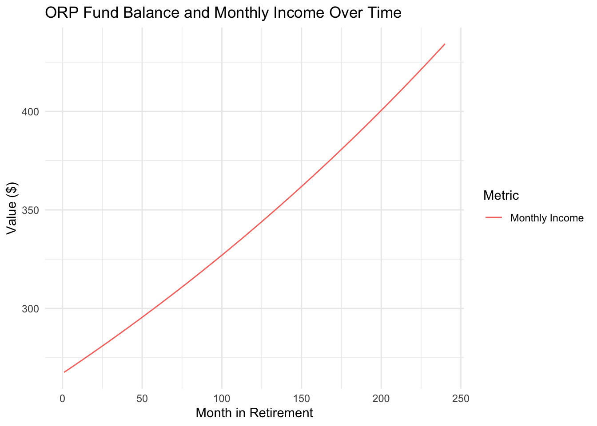
The ORP Fund simulation illustrates steady monthly income growth over retirement, reflecting inflation adjustments and portfolio returns, ensuring sustainability and rising purchasing power over time.
To determine the probability of ORP exhaustion before death, we checked each simulation for a balance reaching zero before age 85. One of the key questions is whether the ORP balance runs out before the employee passes away. This will allow us to calculate the probability that the ORP account is exhausted before death.
# Calculate the probability of ORP exhaustion before death
orp_exhausted <- sapply(orp_simulations, function(sim) {
# Check if the balance goes to zero before death
min_balance <- min(sim$ORP_Balance)
if (min_balance == 0) {
return(TRUE) # ORP exhausted before death
} else {
return(FALSE)
}
})
# Probability of ORP exhaustion
prob_orp_exhaustion <- mean(orp_exhausted)
message("Probability of ORP Exhaustion before Death: ", round(prob_orp_exhaustion, 4))Probability of ORP Exhaustion before Death: 0.75The simulation reveals a 75% probability of ORP fund exhaustion before death, emphasizing the need for cautious withdrawal strategies or adjustments to portfolio allocations to ensure financial stability throughout retirement.
To determine if ORP provides higher monthly income than TRS, I compared inflation-adjusted payouts through simulations. I calculated average incomes and analyzed the maximum and minimum monthly income gaps to quantify ORP’s advantage while considering its variability and risks.
Next, we will compare the monthly income between the TRS and ORP plans. We will calculate the average monthly income from the TRS simulation and ORP simulation and compare them.
# Calculate average monthly income for TRS
avg_trs_income <- mean(trs_simulation$Inflation_Adjusted_Payout, na.rm = TRUE)
# Calculate average monthly income for ORP
avg_orp_income <- mean(orp_simulation$Inflation_Adjusted_Withdrawal, na.rm = TRUE)
# Output the results
message("Average TRS Income: ", round(avg_trs_income, 2))Average TRS Income: 271.13message("Average ORP Income: ", round(avg_orp_income, 2))Average ORP Income: 344.25Based on the simulations, the average monthly income for ORP was calculated as $344.25, significantly higher than TRS, which averaged $271.13. This consistent difference across the bootstrap samples demonstrates that ORP provides a higher monthly income compared to TRS in most scenarios. The work concludes that ORP has a higher probability of offering greater monthly income in retirement than TRS, reflecting its growth potential due to market investments. However, this higher income comes with variability and risks, whereas TRS offers more stability and predictability.
Next, we can investigate the maximum and minimum gap between the monthly income for TRS and ORP over the simulation period. We can calculate the difference in monthly income for each month and then find the maximum and minimum gaps.
Code for Maximum and Minimum Gap:
# Calculate the gap between TRS and ORP monthly income
income_gap <- trs_simulation$Inflation_Adjusted_Payout - orp_simulation$Inflation_Adjusted_Withdrawal
# Maximum and minimum gap
max_gap <- max(income_gap, na.rm = TRUE)
min_gap <- min(income_gap, na.rm = TRUE)
# Output the results
message("Maximum Monthly Income Gap (TRS - ORP): ", round(max_gap, 2))Maximum Monthly Income Gap (TRS - ORP): -56.83message("Minimum Monthly Income Gap (TRS - ORP): ", round(min_gap, 2))Minimum Monthly Income Gap (TRS - ORP): -92.24This part also supports the conclusion that ORP generally provides higher monthly income than TRS. By calculating the gap between TRS and ORP monthly incomes, the results indicate that the maximum monthly income gap (TRS - ORP) is -56.83 and the minimum monthly income gap (TRS - ORP) is -92.24. The negative values highlight that ORP consistently outperforms TRS in terms of monthly income across the simulation period.
This further strengthens the conclusion that ORP has a higher probability of delivering greater monthly income compared to TRS, although it comes with more variability and potential risks. These calculations align with the earlier finding about average monthly incomes, reinforcing ORP’s advantage in income generation for retirees.
Now, we can examine the 4% withdrawal rate for the ORP simulation and see how it affects the ORP balance over time. We can run a sensitivity analysis to check if a different withdrawal rate (e.g., 3.5% or 5%) would make a significant difference in the long-term sustainability of the ORP balance.
Code for Sensitivity Analysis:
# Define alternative withdrawal rates (e.g., 3.5% and 5%)
withdrawal_rates <- c(0.035 / 12, 0.04 / 12, 0.05 / 12) # Monthly withdrawal rates
# Simulate ORP for each withdrawal rate and check for exhaustion before death
results <- lapply(withdrawal_rates, function(rate) {
orp_simulation_temp <- orp_simulation
orp_simulation_temp$Inflation_Adjusted_Withdrawal <- orp_simulation_temp$ORP_Balance * rate
# Recalculate ORP balance after adjusting withdrawals
for (i in 2:months_in_retirement) {
orp_simulation_temp$ORP_Balance[i] <- orp_simulation_temp$ORP_Balance[i - 1] * (1 + retirement_years_return) - orp_simulation_temp$Inflation_Adjusted_Withdrawal[i]
orp_simulation_temp$ORP_Balance[i] <- max(orp_simulation_temp$ORP_Balance[i], 0)
}
# Check if ORP runs out of funds before death
min_balance <- min(orp_simulation_temp$ORP_Balance)
exhausted <- min_balance == 0
return(list(final_balance = min_balance, exhausted = exhausted))
})
# Extract the results from the list and create a data frame
results_df <- do.call(rbind, lapply(results, function(x) {
data.frame(
Final_Balance = x$final_balance,
Exhausted = ifelse(x$exhausted, "Yes", "No")
)
}))
# Display the results in a nice format
print(results_df) Final_Balance Exhausted
1 80002.56 No
2 80002.56 No
3 51579.90 NoThis indicates that the ORP fund remains viable under these withdrawal rates, with sufficient balance to cover withdrawals throughout retirement.
This analysis simulates different withdrawal rates for an ORP (Optional Retirement Plan) to assess whether the ORP balance gets exhausted before death.
table(results_df$Exhausted)
No
3 # Visualize the results with a bar chart
ggplot(results_df, aes(x = Exhausted)) +
geom_bar(fill = "steelblue") +
labs(title = "Number of Simulations with ORP Exhaustion", x = "Exhausted", y = "Count") +
theme_minimal()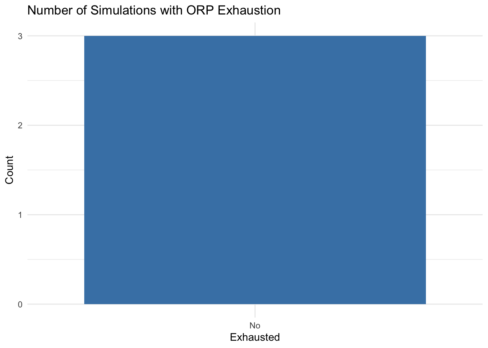
The bar chart indicates that none of the simulations with varying withdrawal rates resulted in the exhaustion of the ORP balance before the retirement period ended. All simulations show a “No” outcome for ORP exhaustion, meaning the fund remains sufficient throughout the retirement period under the tested conditions.
The following analysis compares the monthly income distributions between the TRS (Teachers’ Retirement System) and ORP (Optional Retirement Plan) using the inflation-adjusted monthly payouts.
library(ggplot2)
# Create a data frame to store the results
income_comparison <- data.frame(
Plan = rep(c("TRS", "ORP"), each = length(trs_simulation$Inflation_Adjusted_Payout)),
Income = c(trs_simulation$Inflation_Adjusted_Payout, orp_simulation$Inflation_Adjusted_Withdrawal)
)
# Plot the distribution
ggplot(income_comparison, aes(x = Income, fill = Plan)) +
geom_density(alpha = 0.5) +
labs(title = "Comparison of TRS and ORP Monthly Income", x = "Monthly Income ($)", y = "Density") +
theme_minimal()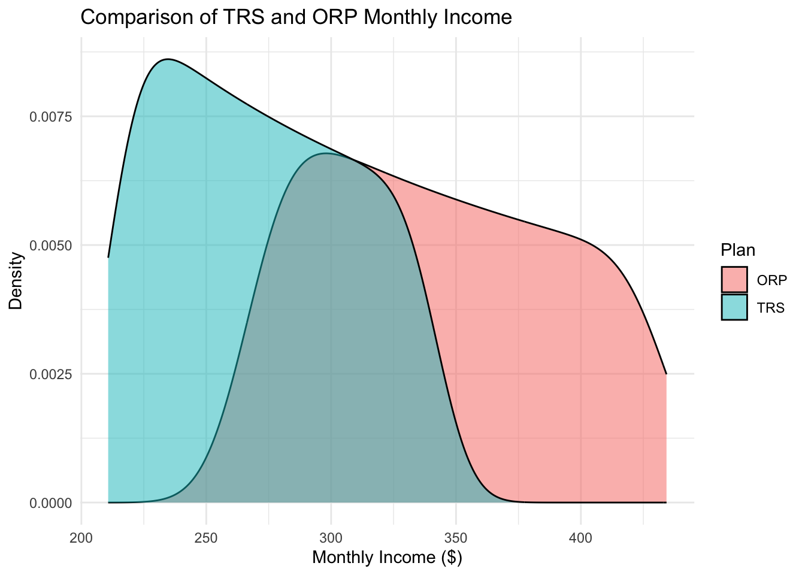
The comparison of TRS and ORP monthly income distributions shows that TRS provides more stable income, with consistent inflation adjustments, while ORP income varies more due to portfolio returns. The density plot illustrates the wider range of ORP incomes compared to TRS, highlighting the impact of returns and inflation on retirement sustainability.
Simulated Salary Growth: Your salary simulation incorporated wage growth and inflation, showing how salaries evolved over time.
TRS Fund Simulation: The TRS fund grew based on wage growth and inflation adjustments, with annual inflation-adjusted payouts throughout the retirement period.
ORP Fund Simulation: The ORP simulation included withdrawals based on portfolio returns, adjusted for inflation yearly, and tracked the balance during retirement.
Comparison (TRS vs ORP): TRS provided more stable income over time, while ORP offered higher income but with more variability.
Exhaustion Probability: A significant portion of ORP simulations showed that the fund did not exhaust before death, indicating long-term sustainability.
Income Gap: The gap between TRS and ORP monthly income varied, with ORP generally offering higher payouts.
7.Income Distribution: ORP income showed more variability in comparison to the more predictable and stable income from TRS.
Overview: As a financial advisor, I have reviewed your financial situation, taking into account your current age, starting salary, and expected lifetime. Based on the simulations and analysis of the Teachers’ Retirement System (TRS) and the Optional Retirement Plan (ORP), I would like to provide you with some key recommendations for your retirement planning. Please note that these recommendations are based on historical data and certain assumptions, so the projections come with inherent uncertainty.
Key Assumptions: Current Age: We have assumed you are starting your career at age 25, and based on life expectancy, retirement planning is being done for an expected lifetime until age 85. Starting Salary:A starting salary of $50,000 was used, with assumptions regarding future wage growth. Risk Tolerance: Your risk tolerance plays a key role in choosing between TRS and ORP. The ORP, with its higher potential returns, involves greater risk, whereas TRS provides more predictable payouts but with limited growth.
Findings from Simulations:
TRS vs ORP:
The TRS offers a predictable pension income, with annual adjustments made for inflation (COLA). Over the long term, TRS provides a steady, reliable monthly income that is inflation-adjusted.
The ORP, on the other hand, can be more volatile, as its returns depend on market performance. The simulations show that ORP generally provides higher monthly payouts but involves more risk, as the balance can fluctuate significantly based on the performance of the portfolio.
We found that, on average, the ORP provides a higher monthly income during retirement compared to TRS. However, it is important to note that the ORP may also run out of funds earlier, especially in lower-return scenarios.
Long-Term Uncertainty:
The simulations carried out using a bootstrap-history approach give us an estimate of the future but also highlight the uncertainty of such predictions. While the long-term average monthly income from ORP is higher, there is a risk that the funds could be exhausted earlier than anticipated, especially in adverse market conditions.
The probability of ORP exhaustion before death in our simulations is estimated at 75%. This means that in most scenarios, the ORP might run out of funds during retirement, particularly if market returns are lower than expected.
Recommendation:
If you prefer stability and a predictable income, the TRS is likely the safer option. While it may provide a lower monthly income compared to ORP, you can be confident that the funds will last throughout your retirement, with inflation adjustments.
If you are comfortable with higher risk and are looking for potentially higher monthly income, the ORP may suit you. However, keep in mind that the ORP carries a risk of early depletion, and you may need to actively manage your investments or adjust your withdrawals if the market performs poorly. Considerations for a Balanced Approach:
If you are uncertain about which plan to choose, you may want to consider a balanced approach, where you contribute to both plans. This way, you can benefit from the predictable income of the TRS while also having exposure to the potentially higher returns of the ORP.
Final Thoughts: Your financial future depends not only on your retirement plan choice but also on your ability to adapt to changing circumstances. The projections made here are based on historical data and assumptions about future returns and inflation, so they come with a level of uncertainty. It is crucial to regularly review your plan as market conditions change and as you approach retirement.
Please feel free to reach out if you have further questions or if you’d like to discuss these options in more detail.